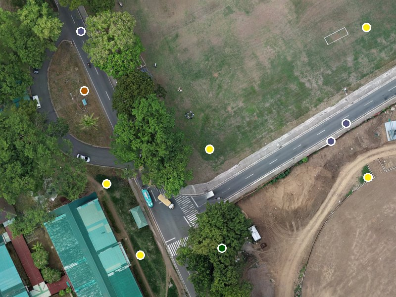
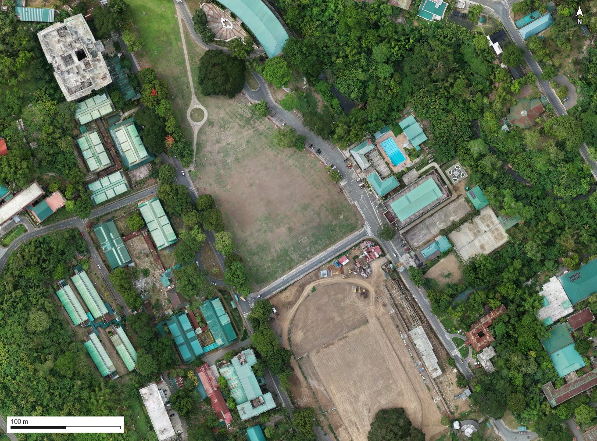
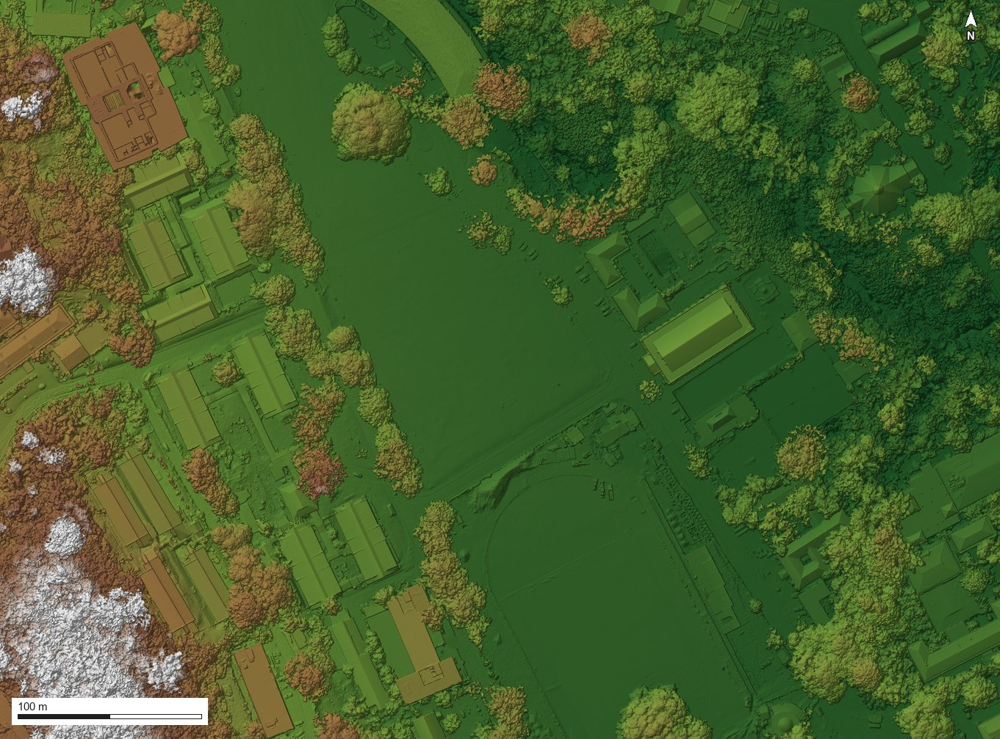
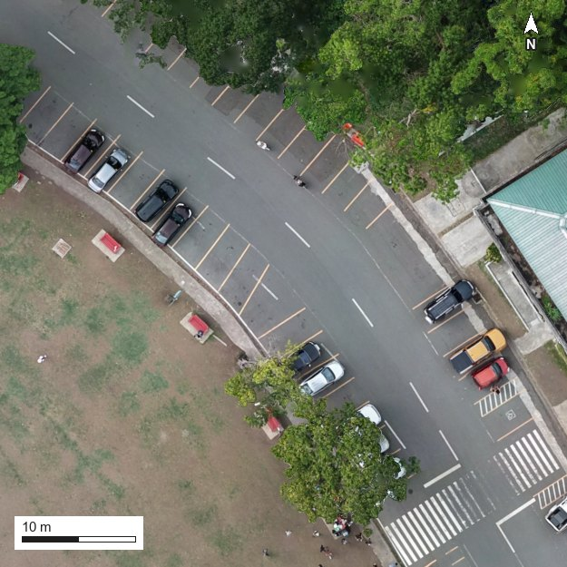
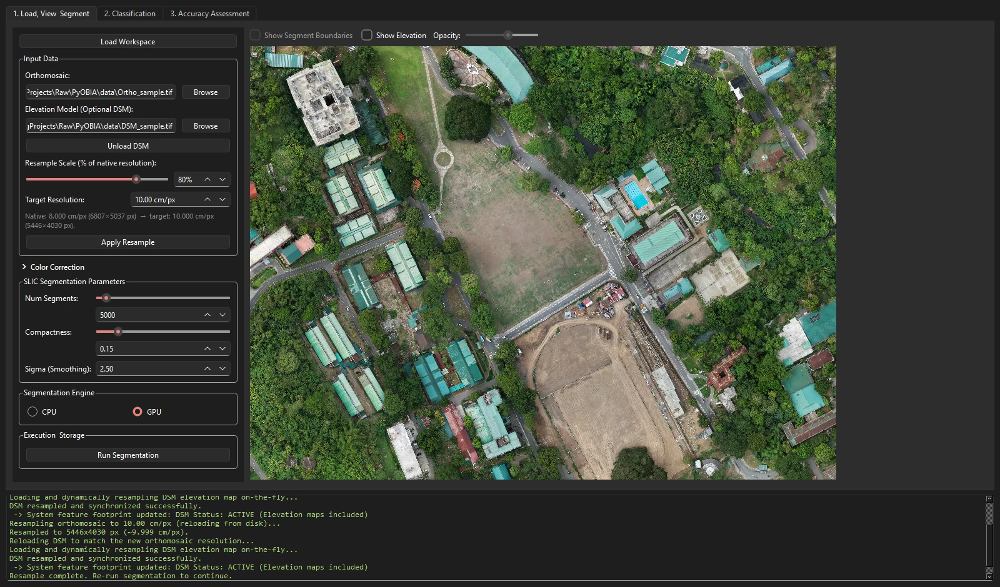
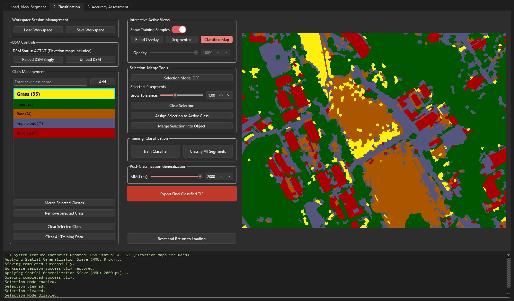
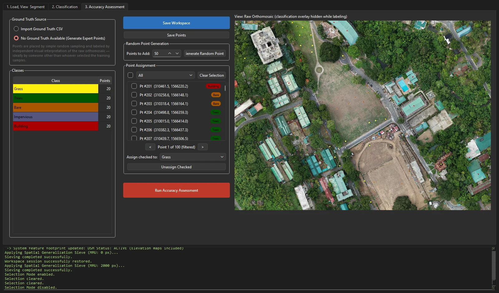

Lite Land
by LeoBar · a lightweight desktop app for object-based land-cover mapping of drone orthomosaics
User manual
Turn a drone orthomosaic into a checked land-cover map
Lite Land splits an aerial image into objects, describes each object with up to 23 measurements, learns your classes from examples you click, and then checks the finished map against an independent sample. This manual walks one real 22-hectare survey through every step, using a complete saved session: 340 labelled training objects and 100 independently labelled check points.



- Grass
- Trees
- Bare
- Impervious
- Building
1Welcome
Lite Land is a desktop tool for object-based image analysis (OBIA) of very-high-resolution drone imagery. It was built to map canopy gaps in tropical forest, and it works for any land-cover classes you can recognise by eye in an RGB orthomosaic: trees, grass, bare ground, roads, buildings, water.
Lite Land picks up where Lite Flight leaves off. Plan and fly the survey with Lite Flight, process the photos into an orthomosaic and surface model in your photogrammetry software, then bring both into Lite Land to map them. Like Lite Flight, it is lightweight: one self-contained program that runs offline on a single workstation, with no Python, GIS software or account needed.
You work through three tabs, left to right. Each tab hands its result to the next.
On the sample data at 10 cm with a GPU, segmenting and measuring all objects took about 35 seconds. Most of your time goes into labelling training examples and checking the result.
2Installing and launching
Lite Land ships as a self-contained Windows program. You do not need Python or any GIS software installed. A free trial is available; the full version is licensed separately.
- Download the trial,
LiteLand_Trial_v1.3.zip, from the Releases page. - Unzip the whole folder to your computer, for example to
C:\Tools\LiteLand_Trial. It holdsLiteLand_Trial.exe, an_internalfolder of libraries and asamplefolder. Keep them together; the program will not start if the exe is moved out on its own. - Double-click
LiteLand_Trial.exe. The first launch can be slow while Windows loads the libraries; later launches are quicker. - Check the console at the bottom of the window. It should say
Load an image to begin.Every action the app takes is logged there, including errors. - Check the Segmentation Engine box on Tab 1. If GPU is selectable, an NVIDIA CUDA graphics card was found and segmentation will run on it. If it is greyed out, the app runs on the CPU only; everything still works, just slower.
- Click Open Sample Session on Tab 1 to open the sample survey and its finished classification, used throughout this manual.
| Feature | Trial | Full version |
|---|---|---|
| Tab 1: load, colour-correct, resample, DSM overlay, segment (CPU or GPU) | Yes, on your own data | Yes |
| Tab 2: Segmented, Classified and Blend views | Yes, on the sample session | Yes |
| Classes, training samples, grow and merge tools | No | Yes |
| Train, classify, minimum mapping unit, GeoTIFF + QGIS export | No | Yes |
| Save and load your own workspaces | No | Yes |
| Tab 3: accuracy assessment | No (shown, locked) | Yes |
For the full version, contact LeoBar at ldbarua@gmail.com. The full version's program is PyOBIA.exe in a PyOBIA folder; its window title reads Object-Based Image Analysis (OBIA) Tool.
| Requirement | Needed | Notes |
|---|---|---|
| Operating system | Windows 10 or 11, 64-bit | The build is Windows-only. On a fresh machine you may need the Microsoft Visual C++ Redistributable (x64). |
| Graphics card | Optional | An NVIDIA GPU with CUDA speeds up segmentation. On the sample: s on GPU vs s on CPU. |
| GPU memory | Scene-dependent | About 60 ha at 10 cm/px came near the limit of an 8 GB card. Resample larger scenes first (Part C, 6.3). |
| Disk | Room for a workspace | Each orthomosaic gets a <name>_workspace folder next to it when you first save. |
3The sample dataset
Every figure and number in this manual comes from one drone survey of a hillside campus: tree stands, a sports field, roads, earthworks and dozens of roofs. Its two files, with the saved session, ship with the trial in its sample folder; Open Sample Session opens them.
- Orthomosaic
- Ortho_sample.tif
- Surface model
- DSM_sample.tif
- Size
- × px
- Resolution
- 8 cm per pixel
- Footprint
- 545 × 403 m · 22 ha
- Coordinates
- WGS 84 / UTM 51N
- Bands
- RGB + alpha, 8-bit
- DSM heights
- – m


The two files are a matched pair from the same photogrammetry run: the same grid, the same 8 cm pixels, the same corners. Lite Land needs them to line up because it reads each object's height from exactly the pixels it reads its colour from. If your DSM has a different resolution, the app regrids it to the orthomosaic automatically.

4A tour of the interface
The window has three tabs across the top, a control column on the left of each tab, a large map viewer, and a console strip along the bottom that logs every step. Hover a numbered marker to find its control.
Tab 1 · Load, View & Segment

1 2 3 4 5 6 7 8 9 10 11- 1Tabs. Work left to right: segment, classify, assess.
- 2Load Workspace. Reopen a saved session.
- 3Input Data. Orthomosaic and optional DSM paths. Each loads as soon as you pick it.
- 4Resample. Work at a coarser resolution, by percent or cm/px.
- 5Color Correction. Collapsed by default; click to open.
- 6SLIC parameters. Number of segments, compactness, sigma.
- 7Segmentation Engine. GPU or CPU.
- 8Run Segmentation. Starts stages 2 and 3.
- 9Overlays. Segment boundaries and the elevation layer, with opacity.
- 10Viewer. Scroll to zoom, drag to pan.
- 11Console. Progress, timings, warnings and errors.
Tab 2 · Classification

1 2 3 4 5 6 7 8 9 10 11 12- 1Workspace. Save or reload the whole session.
- 2DSM Controls. Shows whether height features are active.
- 3Add a class. Type a name, click Add, pick a colour.
- 4Class list. The highlighted class receives your clicks. The number is its training objects.
- 5Class tools. Merge, remove, clear one class's samples, clear all.
- 6Views. Training-sample toggle; Blend, Segmented, Raw/Classified; opacity.
- 7Selection & Merge. Grow a selection by similarity, assign it, or merge it into one object.
- 8Train / Classify. Fit the Random Forest, then label every object.
- 9Generalization. Minimum mapping unit (sieve) in pixels.
- 10Export. Write the classified GeoTIFF and QGIS style.
- 11Reset. Clear everything and start over.
- 12Viewer. Click objects to label them; Ctrl+drag to paint.
Tab 3 · Accuracy Assessment

1 2 3 4 5 6 7 8 9 10- 1Ground truth source. Import field points, or generate points to label yourself.
- 2Classes tally. How many points carry each label.
- 3Save. Save the workspace, or just the points.
- 4Random points. How many to add, then Generate.
- 5Point list. Tick points, filter by class, double-click to fly to one.
- 6Navigation. Step through points with < and >.
- 7Assign. Give ticked points a class, or unassign them.
- 8Warning. Points still without a label are left out of the run.
- 9Run. Build the confusion matrix and report.
- 10Viewer. Always the raw image, so the map cannot sway your labels.
Mouse and keys
| Action | Where | What it does |
|---|---|---|
| Scroll wheel | Any viewer | Zoom in and out. Zooming out stops when the whole image fits. |
| Drag | Any viewer | Pan. |
| Click an object | Tab 2 | Add it to the highlighted class as a training sample. Click it again to remove it. |
| Ctrl + drag | Tab 2 | Paint: every object the cursor crosses joins the highlighted class. |
| Click (Selection Mode on) | Tab 2 | Select an object as a seed; the Grow Tolerance slider then grows it. |
| Ctrl + drag (Selection Mode on) | Tab 2 | Add every object crossed to the selection. |
| Ctrl + Z | Tab 2 viewer, Selection Mode on | Undo the last selection change. |
| Double-click a class | Tab 2 class list | Rename it or change its colour. |
| Click a point | Tab 3 | Tick or untick it. |
| Right-click a point | Tab 3 | Assign a class, unassign, or delete. |
| Right-click empty map | Tab 3 | Add a point here, with or without a class. |
| Ctrl + drag a point | Tab 3 | Move it. |
| , and . | Tab 3 | Previous and next point. |
| Double-click a list row | Tab 3 | Zoom the map to that point. |